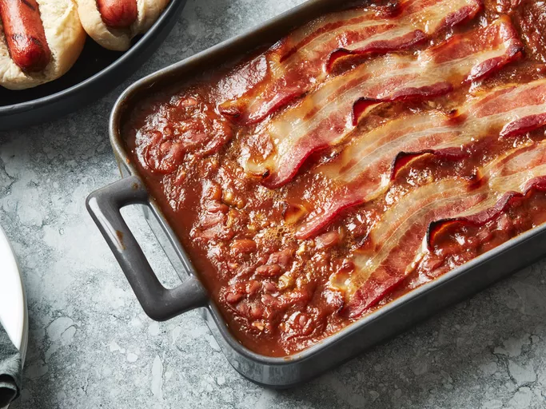

Macaroni

Tangy, sweet, old-fashioned baked beans are made the easy way using canned beans. This is my grandma's favorite semi-homemade recipe. She makes it every Thanksgiving, and we usually end up scraping the pan clean! There are never any leftovers.
This flavorful macaroni salad is easy to make and is the perfect crowd-pleasing dish to bring to your next picnic or potluck.
Ingrediants
- 2 (28 ounce) cans baked beans
- 1 small onion, chopped
- 3 tablespoons pancake syrup
- 2 tablespoons brown sugar
- 2 tablespoons ketchup
- 2 teaspoons prepared yellow mustard
- 4 slices bacon